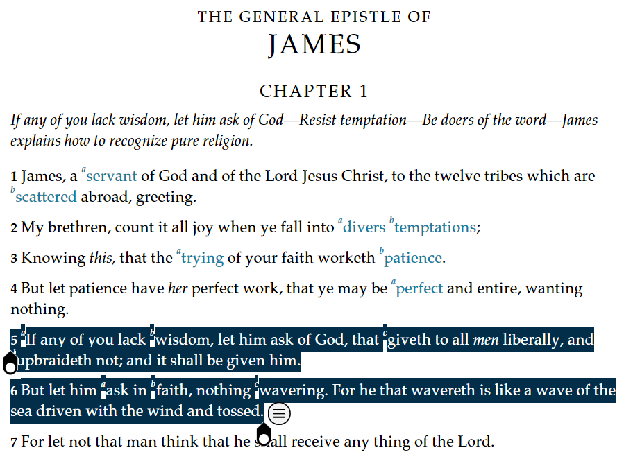
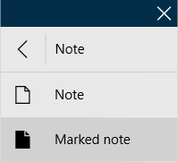
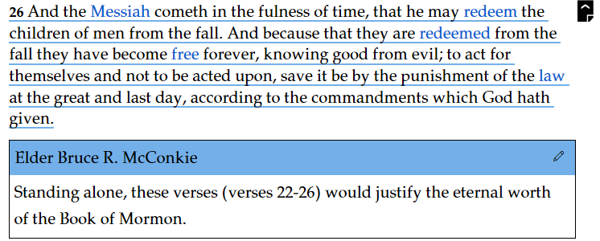
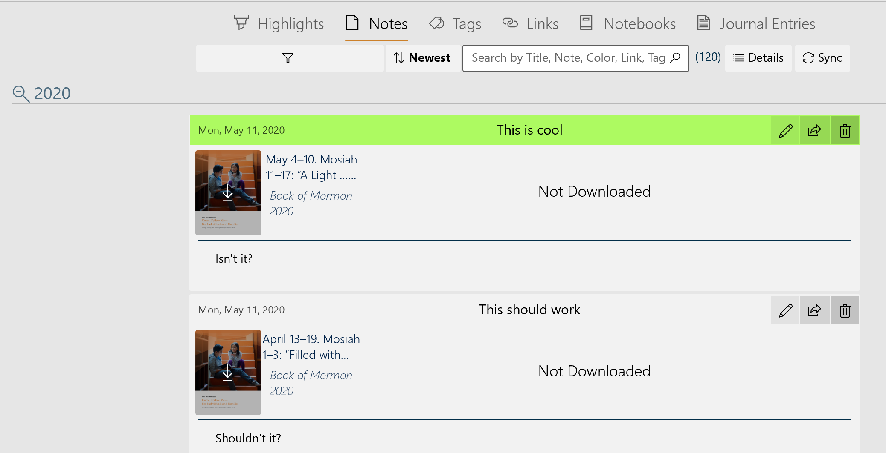

How Do I Use Notes - Silent Video
How Do I Use Notes - Silent Video How Do I Use Notes - Silent Video
Gospel Library makes it possible to add notes to specific scriptures and other content. These can be your own insights or inspiring comments by others.
Your notes appear inside the content below the verse or paragraph they are added to and in the Annotations pane. You can add an unlimited number of notes in Gospel Library.
You can learn more about the Annotations pane in Chapter 9: How Do I Work With Notebooks?
First, to add a note, you'll need to select the text under which you'd like to add a note. You can select a block of text (using a mouse or other touch device) by tapping on a word and using the selection handles to expand or shrink the selection range.
Once text is selected, press the small hint bubble ( ) to open the context menu. When the context menu opens, press the Note option. The annotations editor, pictured below, will appear. (You can also create a new note by pressing the New Note button in the Annotate ribbon.) Alternatively, if you'd like to make a note with a marking (a highlight or underline), press the arrow beside the Note option, then choose the Marked Note option. You can add, remove, or change the marking later using the annotations editor if you change your mind.
) to open the context menu. When the context menu opens, press the Note option. The annotations editor, pictured below, will appear. (You can also create a new note by pressing the New Note button in the Annotate ribbon.) Alternatively, if you'd like to make a note with a marking (a highlight or underline), press the arrow beside the Note option, then choose the Marked Note option. You can add, remove, or change the marking later using the annotations editor if you change your mind.
A note has two main components: the title and the content. Note titles can be a great way to give yourself a brief overview of what you have written in the note. You can also use note titles as a way to pose questions to yourself or for inclusion in a lesson plan.
The content is the main text of your note. As in the example below, you can include information from other sources, record inspiration and answers to your questions, and provide greater insight on passages of scripture and other gospel content. To help you organize and focus your thoughts, some basic formatting features, including bold, italics, bulleted lists, and numbered lists options are available at the bottom-right portion of the note editor.

The other elements of the notes box, including tags, links, and notebooks, are covered in later chapters of this help guide. Once you have finished writing your note, press the Save button to save it.
You can paste text you have copied by using the keyboard shortcut for pasting, CTRL+V. This shortcut works both on physical keyboards and on the on-screen touch keyboard. CTRL+C, the keyboard shortcut for copying, also works in Gospel Library.
A marked note is a note that is connected to a highlight or underline. In Gospel Library for Windows, notes are, by default, disconnected from highlights or underlines. If you would like to create a highlight or underline at the same time you create your note, you can use the marked note feature found in the context menu. This will create a note and a marking using the most recently used highlight color and style (highlight or underline).
A note without an attached marking can become a marked note at any time by changing its color in the note editor to something other than clear. You can change the style of the note's marking as you would change any other marking's style. You can learn more about editing markings in Chapter 4: How Do I Mark Scriptures and Other Gospel Content?
Deleting a highlight or underline connected to a marked note will also delete its connected note. To safely remove the marking associated with a marked note, use the note editor to change the marked note's color to clear.
To edit an existing note, press the Edit button ( ) at the top-right corner of the box surrounding your note. This will return the note to the annotations editor and allow you to make changes.
) at the top-right corner of the box surrounding your note. This will return the note to the annotations editor and allow you to make changes.
To remove a note, enter editing mode by pressing the Edit button () on the top right of your note. At the top-left corner of the annotations editor will be a Delete button ( ). Press that to delete your note.
). Press that to delete your note.
Notes are visible inline, just below where the note was added to the gospel content. To view an inline note that has not already expanded, press the Expand Note button () in the right margin of the text.
You can choose whether your notes are expanded or collapsed by default using an option in the Settings pane, in the Appearance section. Expanded notes mean that all notes will be fully visible inside the text you are reading, whereas collapsed notes will only show the note icon beside the verse or paragraph they belong to.

There are two other settings that can also affect a note's visibility, including the Show Notes setting (available in both the Settings pane and View ribbon) and the Visible Notebooks feature, available in the View ribbon. If a note is not stored in a visible notebook, it will not appear inline with gospel content.
Highlights can be managed using by selecting the 'Notes' button on the navigation bar and then choosing the 'Notes' tab.
The number of entries is shown in parenthesis to the right of the 'search' box. The functions of the five controls are listed in the table below.
| Filter | The notes are listed by either the color used or the book they came from. The desired color or book is selected from a pull-down menu. |
| Sort by | The notes may be sorted by 'newest to oldest' or 'oldest to newest' |
| Search | Allows the entry of a search string. Press the 'search' icon to begin the search. |
| Details | Lists the number of both synced and unsynced annotations by each annotation type. |
| Sync | Synchronizes the local annotations with the annotations stored on the network. |